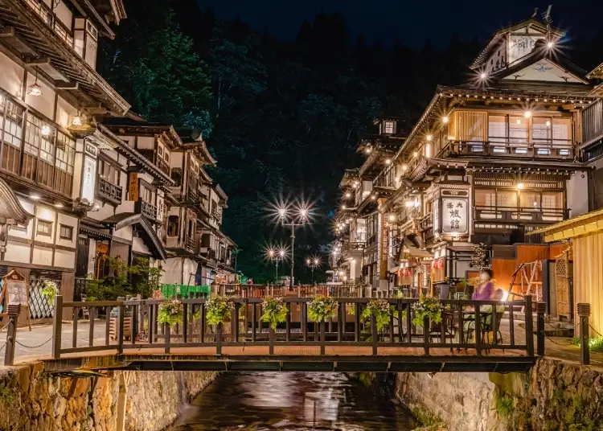

Japan

Ginzan Onsen
Description
Ginzan Onsen is a beautiful hot spring town in Japan known for its traditional wooden inns, glowing gas lamps, and peaceful streets that look especially magical in winter. The town is famous for its nostalgic atmosphere and has been featured in popular films and TV dramas. Visitors can enjoy walking around, soaking their feet in natural hot spring footbaths, shopping, eating at local cafes, and even renting traditional Taisho-era clothing. It is easy to reach from Tokyo by bullet train and bus, making it a great destination for a relaxing getaway. Nearby attractions include the scenic Senshinkyo Gorge and the beautiful Shirogane-no-taki Waterfall, which add to the area's natural beauty.
More Activities
Order Place / Activity Need to do/fill something beforehand? 1 Shirogane Park ❌ No reservation or form needed. Just walk around and enjoy the scenery. 2 Silver Mine Caves 🎟️ Usually an admission ticket is needed. No special form normally required. Wear comfortable shoes. 3 Free Foot Baths ❌ No reservation or ticket. You can simply use them when available. Bring a small towel. 4 Shirogane-yu Public Bath 🎟️ Admission fee required. Usually no reservation for normal bathing, but check current hours/rules before going. Bring a towel or rent/buy one if available. 5 Curry Bread ❌ No reservation normally needed. Just buy it from the shop if available. 6 Fresh Tofu ❌ No reservation normally needed. Buy it from the shop and enjoy it fresh. 7 Soba and Soba Ice Cream ❌ No reservation normally needed for a normal meal. You may have to wait during busy times.
Recommended Order
Shirogane Park → Silver Mine Caves → Free Foot Baths → Shirogane-yu Public Bath → Curry Bread → Fresh Tofu → Soba & Soba Ice Cream
Best Transportation
High-speed Shinkansen (bullet train), which reaches speeds up to 320 km/h (199 mph). For city transit, urban trains and subways paired with a contactless IC card (like Suica or Pasmo) offer the most efficient and seamless experience.
Best Time to Go
The best time to visit Ginzan Onsen in Yamagata Prefecture, Japan, is during the winter months (December to February) when snow blankets the wooden ryokan and gas lamps glow at dusk for a fairytale look. Autumn (October to November) is also great for colorful fall leaves.
Worst Time to Go
The worst time to visit Ginzan Onsen is winter (December through March), specifically during peak evening hours (5:00 PM to 8:00 PM). Heavy snow, freezing temperatures down to 23°F (-4.3°C), severe traffic caps, mandatory pre-booked evening entry tickets, and massive crowds make this period the most difficult and restricted.
Rules
To visit Ginzan Onsen safely and respectfully, follow strict local regulations including evening visitor ticket quotas during winter peak seasons, a ban on unauthorized personal vehicles in the town center, and traditional Japanese hot spring rules like bathing completely naked and keeping tattoos and towels out of the water